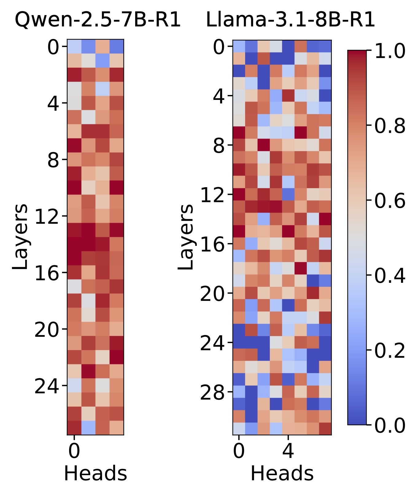
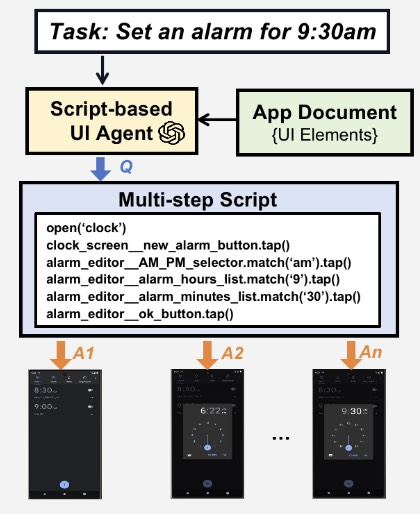
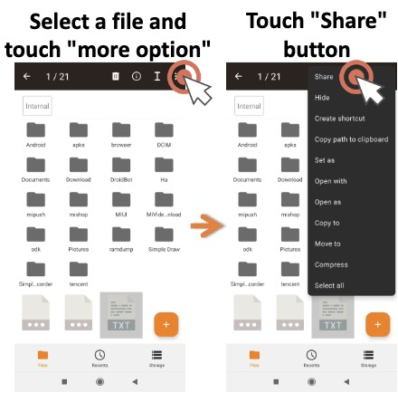

|
Wenjie Du
Welcome to my homepage!🤗
I'm Wenjie Du (杜文杰), a research intern in ENCODE Lab of Prof. Huan Wang at Westlake University.
I obtained B. Eng. in Computer Science and Technology from Sichuan University in 2024 and have received the National Scholarship in 2023.
I was fortunate to work as a research assistant at HKUST in 2025, a research intern at the Institute for AI Industry Research (AIR), Tsinghua University in 2024, and a software developer intern at ByteDance in 2023.
I am grateful to all my mentors, supervisors, and friends for their kindness and support throughout my journey!
Email /
CV /
Scholar /
Linkedin /
Github
I am seeking PhD positions starting Spring/Fall 2026.
|
|
Research
My research interests lie in large language models, machine learning systems, and multi-agent systems.
I focus on uncovering the fundamental properties of large language models to guide the design of efficient, robust, and reliable ML systems.
I am also working towards building collaborative multi-agent systems that leverage multiple LLMs to tackle complex problems.
|
|

|
Which Heads Matter for Reasoning? RL-Guided KV Cache Compression
Wenjie Du,
Li Jiang,
Keda Tao,
Xue Liu,
Huan Wang,
arXiv, 2025
page
/
arXiv
An RL-based framework that identifies reasoning-critical attention heads in LLMs to enable KV cache compression, achieving 20-50% reduction in cache size with minimal performance loss.
|
|

|
AutoDroid-V2: Boosting SLM-based GUI Agents via Code Generation
Hao Wen,
Shizuo Tian,
Borislav Pavlov,
Wenjie Du,
Yixuan Li,
Ge Chang,
Shanhui Zhao,
Jiacheng Liu,
Yunxin Liu,
Ya-Qin Zhang,
Yuanchun Li,
MobiSys, 2025 (Best Artifact Award)
code
/
arXiv
/
pdf
A document-centered framework that converts mobile UI automation into code generation, enabling the script-based mobile GUI agent to achieve higher success rates and lower latency than step-wise agents.
|
|

|
LLM-Explorer: Towards Efficient and Affordable LLM-based Exploration for Mobile Apps
Shanhui Zhao,
Hao Wen,
Wenjie Du,
Cheng Liang,
Yunxin Liu,
Xiaozhou Ye,
Ye Ouyang,
Yuanchun Li,
MobiCom, 2025
code
/
arXiv
An efficient mobile app exploration agent that uses LLMs for knowledge maintenance rather than action generation, achieving the highest coverage with 148x lower cost than baselines.
|
|
{kind=link}